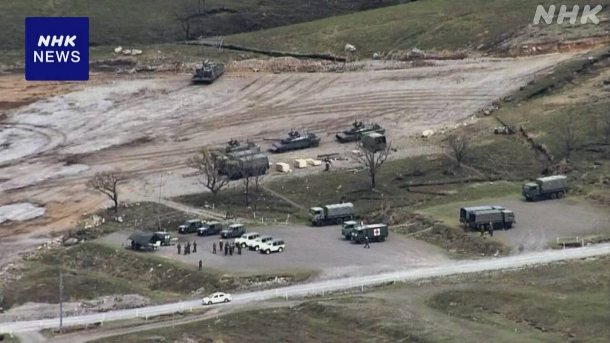
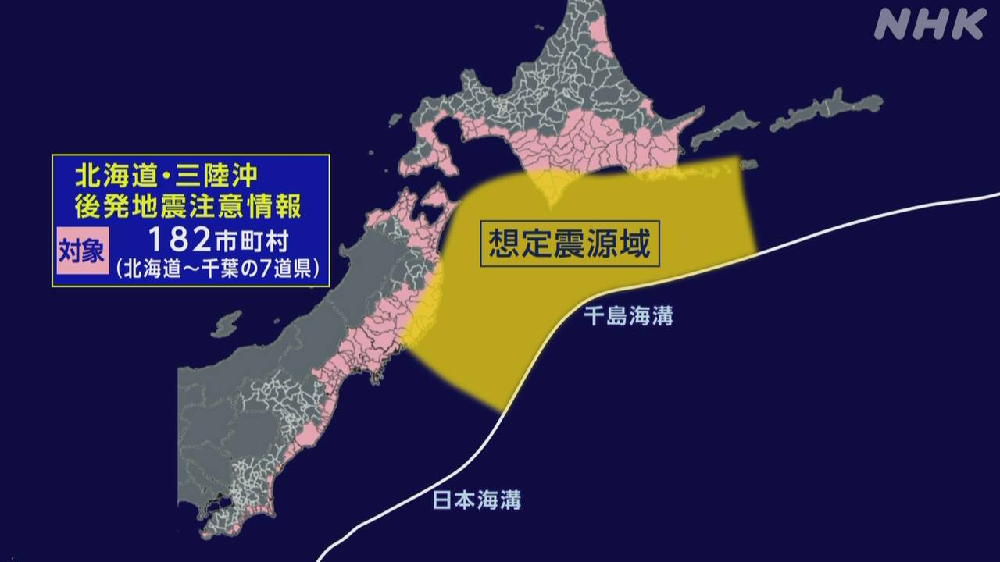

最新ニュース
1️⃣ 大分県の自衛隊で事故 訓練していた3人が亡くなった

21日の朝、大分県にある自衛隊が訓練をする場所で、事故がありました。
戦車で弾を撃つ練習をしていたときに、弾が壊れて大きい事故になりました。戦車に乗っていた3人が亡くなって1人がけがをしました。
自衛隊以外の人や建物に被害はないようです。
自衛隊によると、事故があったとき4人は「10式戦車」という戦車に乗っていました。
自衛隊は、事故の原因などを調べています。
2️⃣ 「182の市や町などでは大きい地震のときの準備をしてほしい」

20日、東北地方の東の海で、大きい地震がありました。青森県と岩手県、宮城県などで強く揺れて、海岸に津波も来ました。
気象庁は地震のあと「北海道・三陸沖後発地震注意情報」という特別な情報を出しました。
北海道や東北地方に近い海で、このあと、もっと大きい地震が起こる可能性がいつもより高くなっています。このため北海道から千葉県までの182の市や町などの人に、地震や津波が来たときの準備をしてほしいと言っています。
これから1週間ぐらいは、大事な物を入れた袋を準備して、夜でもすぐに逃げることができるようにしてください。避難する場所や行き方も、チェックしてください。
3️⃣ 地震でけがをした人がいた 休みになった学校もあった
20日の大きい地震で、東北地方では、けがをした人たちがいます。
岩手県では80歳ぐらいの男の人が転んでけがをしました。
青森県では20歳ぐらいの女の人が逃げるときに足にけがをしました。
休みになった学校もあります。
青森県八戸市では、学校の食事を作る2つの給食センターで建物が少し壊れました。
食事を作ることができないため、21日は八戸市内の65の小学校と中学校が休みになりました。
給食センターの人は「早く建物を直して、おいしい食事をつくりたい」と話しています。
4️⃣ 岩手県 警察官が熊に襲われてけがをした
21日午前、岩手県紫波町の山の中で、警察官が熊に襲われました。
警察官は顔などにけがをしました。ハンターがすぐにその場所で熊を銃で撃ちました。
警察官は、山でどこに行ったかわからない人をさがしていました。
警察によると、熊がいた場所の近くで、亡くなっている女性が見つかりました。
警察は、亡くなった女性が熊に襲われたかもしれないと考えて、誰なのか調べています。
- 〜がある / 〜がいる
- 〜ている / 〜でいる
- 〜になる
- 〜ようだ / 〜みたいだ
- 〜という
- 〜によると
- 〜など
- 〜後 / 〜あと
- 〜より
- 〜や〜など
- 〜まで
- 〜から
- 〜から〜まで
- 〜ため
- 〜ように
- 〜ても / 〜でも
- 〜てください / 〜でください
- 〜ことができる
- 〜ようにする
- 〜こと
- 〜くらい / 〜ぐらい
- 〜方
- 〜中
- 〜かもしれない / 〜かもしれません
vebaev.github.io
Generated: 2026-04-21 13:45:42 UTC